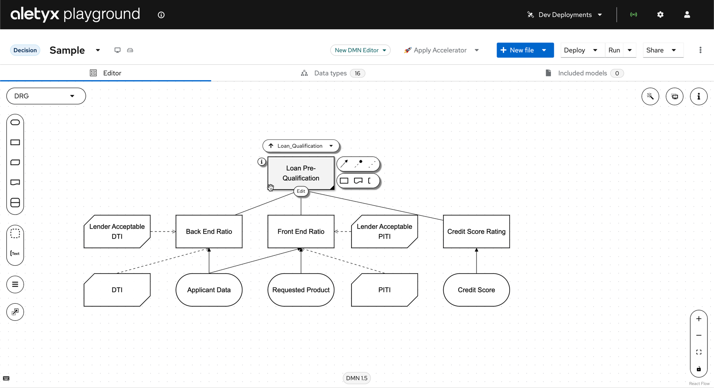
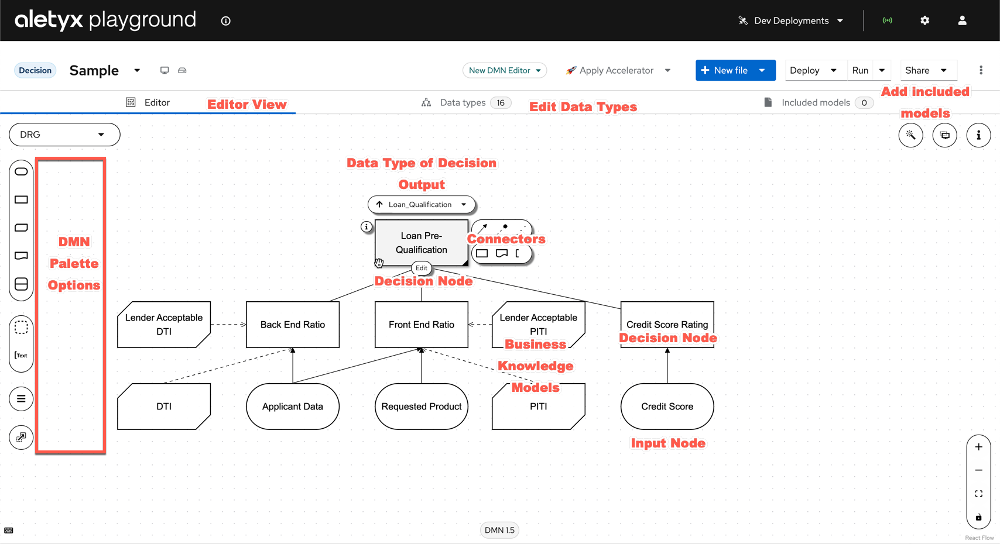
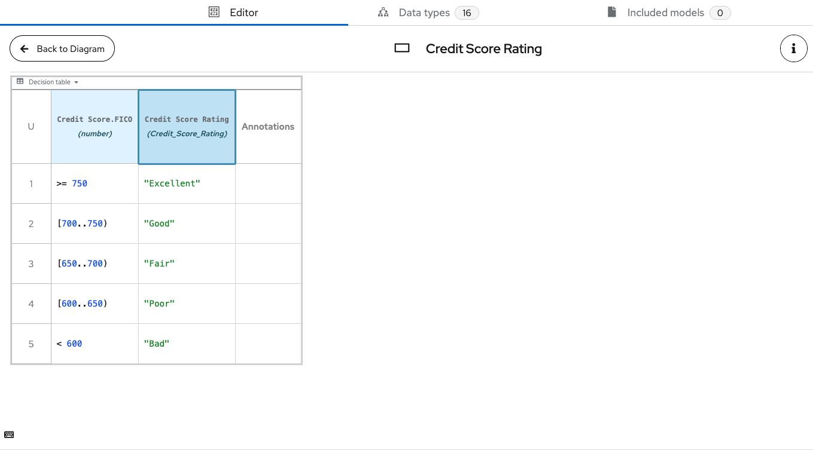
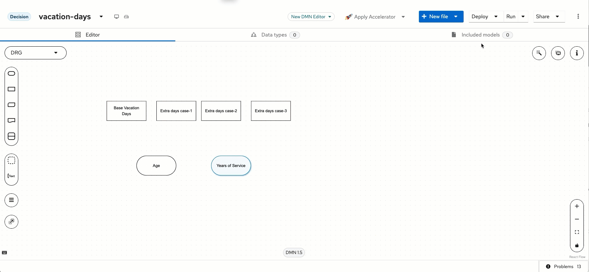
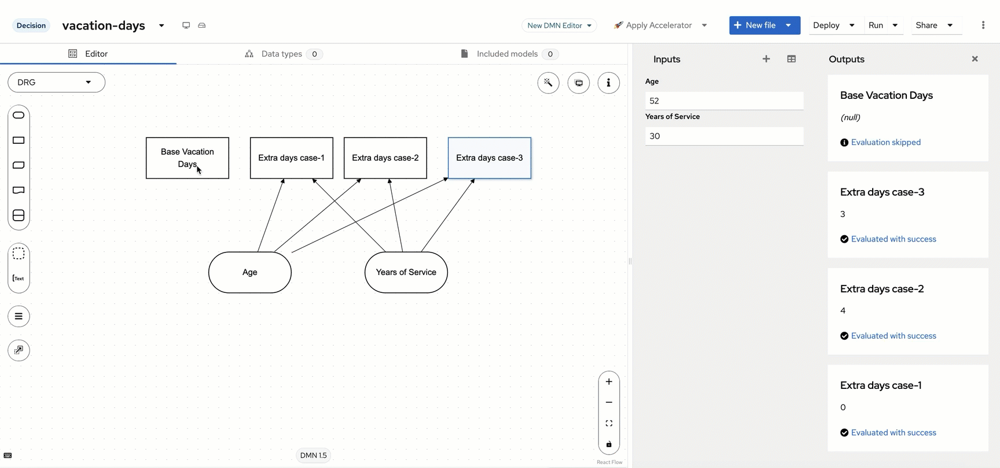
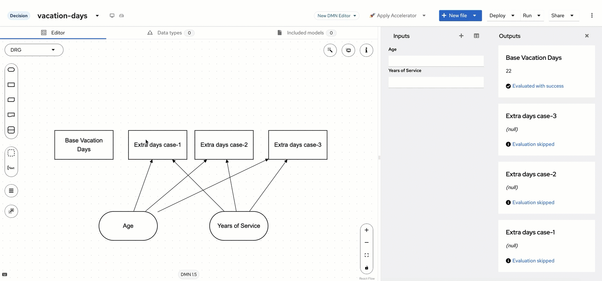
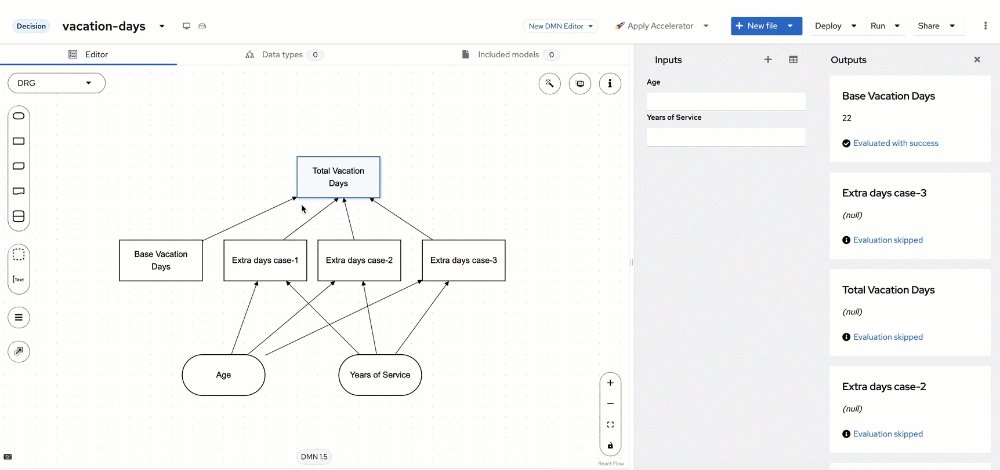

From Concepts to Creation: DMN in Aletyx Playground with Aletyx Enterprise Build of Kogito and Drools 10.1.0-aletyx¶
30 min
Aletyx Playground is a lightweight, browser-based tool for creating, editing, and testing business processes and decision models. In this guide, you'll explore the core features of Aletyx Playground and get hands-on experience with both DMN decision models and BPMN process models.
Accessing Aletyx Playground¶
Aletyx Playground is available as both a container that can easily be deployed into any container orchestration platform or as a local installation option:
Cloud Option:
- Navigate to playground.aletyx.ai
- No installation required, just start playing immediately!
Local Container Option:
As long as you meet have setup your local environment to the Local Environment Requirements then you can run one of these commands to get started with everything deployed locally!
Then access Aletyx Playground at http://localhost:9090
The Aletyx Playground Interface¶
When you navigate to Aletyx Playground , you'll see a welcome screen with several key areas - as you hover over the below image, you will see background on the following areas:
{kind=link}
1. Creation Area
The top tiles allow you to create new projects or import existing ones.
2. Import Area
Import existing projects or DMN/BPMN files either from various Git providers or through direct file uploads.
3. Projects Area
The lower section displays your locally imported projects and models.
Note
Projects in Aletyx Playground are stored in your browser's local storage by default. For persistent storage and collaboration, connect to a Git provider under Profile settings, Playground is not designed to be long term storage of your BPMN/DMN models and should be regularly synchronized with your Git provider!
Exploring Decisions with DMN¶
Let's begin by exploring a sample Decision Model and Notation (DMN) model:
-
From the welcome screen, click Try Sample under the Decision section.
-
This opens a sample "Loan Pre-qualification" DMN model (DMN 1.5 Specification).

Decision EditorThis section of the DMN editor is currently activated and showing the DMN model or a selected.Decision ConnectorsFrom a given decision, you can either connect with the various lines to their appropriate types or connect another decision or knowledge source.Decision Output TypeThe pulldown allows you to map your decision's datatype to a particular part of your model and/or structures.Data Types EditorThis section of the DMN editor allows you to view, create, or edit data types associated with the model.Included ModelsThis section of the DMN editor allows you to reference other models for your DMN model. An included model allows decision/model/data object reuse easily.Credit Score Rating Decision NodeThe rectangle on the DMN editor represents a Decision Node. In this case it is used for representing the Credit Score Rating based on an input of Credit Score. This is data that would be required to execute the decision.Credit Score Input NodeThe oval on the DMN editor represents an Input Data Node used for the applicant's credit score. This is data that would be required to execute the decision.DRG Node SelectorThis section of the DMN editor allow you to easily navigate the different Decision Requirement Diagram's nodes.AnnotationsAnnotations allow you to put various annotations on your DMN model, they have no executable impact, but are great for further explaining a model.Decision InputIn DMN, an Oval represents the input for a DMN model. These can be mapped to specific data structures or types.Decision NodeThe Decision Node is used to place a decision on the DMN requirement diagram. A Decision node with no inputs to it will execute on DMN invocation, if there is a requirement node (e.g. another Decision Node or Input Node preceding it), then it will require that to be completed before its requirement is met and thus execute the decision contained within it.Decision BKMA BKM allows use of Friendly Enough Expression Language (FEEL), Java or PMML models to be used to further supplement decision execution.Decision BKMA BKM allows use of Friendly Enough Expression Language (FEEL), Java or PMML models to be used to further supplement decision execution.Knowledge SourceDocuments, committees, regulations, policies or people that define how a decision should be made. They are not executable.Decision ServiceA Decision Service allows for decisions to be captured and exposed (or hidden) from execution.Edit DecisionClicking the edit below a decision's node when clicked allows you to edit the logic of the selected decision node.Properties of Selected itemClicking the i icon opens the selected node's properties to be opened. This can also be done by pressing the "i" key on your keyboard.View Sample DMN Model

-
Explore the model components:
- Input Nodes: "Applicant Data" and "Credit Score"
- Decision Nodes: "Loan Pre-Qualification"
- Business Knowledge Models: Reusable decision logic
-
Click on the "Credit Score Rating" decision node and select Edit to view the decision logic.
-
This decision table is used to determine the credit ratings based on FICO® scores. If you hover over each icon, it will describe different parts of the Decision Table.

Decision Output
Credit Score RatingThis column sets the value of the output that will be from the respective column. In this case the Credit Score Rating, which maps to the Data Type of Credit_Score_Rating would be set for all of the values in this column if the conditions are a match.Decision Input
Condition of FICO Credit ScoreThis column sets the condition of the FICO Score of the Credit Score. The dot notation allows the table to take the property of FICO from the data, which is a number as highlighted in the column. The rows of rules below will use the score that's given to determine the credit score.FEEL Condition for Associated Decision ConditionWhen creating decisions in DMN, comparative functions are commonly used. If you use a brackets[]- inclusive or parenthesis()- not inclusive, you can write more detailed ranges which create a range by utilizing the... Keep in mind the hit policies for ranges as Unique (U) hit policy requires a single rule being able to execute within the entirety of the tableFEEL Output for Associated Decision OutputIf the requirements of the decision are met, then the condition within the output would be set. For strings, as in this case, you would use the quotes as seen here, but this could just as easily be a number, or FEEL function as well.Decision Annotation (Optional)This column sets allows the Decision editor to set notes about the decision, but this content is not used in the evaluation by the engine.Decision ConnectorsFrom a given decision, you can either connect with the various lines to their appropriate types or connect another decision or knowledge source.Decision Output TypeThe pulldown allows you to map your decision's datatype to a particular part of your model and/or structures.Annotations DecisionThis section of the Decision Table editor allows you to set an annotation, but the value from here is ignored by the decision engine.Rule 5 - Credit Score Less than 600This rule reads as when the FICO score of the Credit Score is less than 600, then set the Credit Score Rating to "Bad".Hit PolicyHit policies determine how to reach an outcome when multiple rules in a decision table match the provided input values. The following are options: Unique (U), Any (A), Priority (P), First (F), Collect (C) of various types for Collect/Sum (C+), Collect/Min (C<), Collect/Max (C>), Collect/Count (C#)Rule 4 - Credit Score greater than 600 and less than 650This rule evaluates when the FICO score of the Credit Score is inclusive of 600 to less than 650. If this evaluates true, then the Credit Score Rating is Poor.Rule 2 - Credit Score greater than 700 and less than 750This rule evaluates when the FICO score of the Credit Score is inclusive of 700 to less than 750, then the Credit Score Rating is set to Good.Rule 3 - Credit Score greater than 650 and less than 700This rule evaluates when the FICO score of the Credit Score is inclusive of 650 to less than 700. If this evaluates true, then the Credit Score Rating is Fair.Rule 1 - Credit Score Greater than or Equal to 750The rule evaluates when the FICO score of the Credit Score is 750 or greater, then the Credit Score Rating is set to Excellent. -
In the next section, we will see how to interact with this model within Aletyx Playground!
{kind=link}
{kind=link}
{kind=link}
{kind=link}
{kind=link}
Interacting With Your Decision Model¶
When building DMN models within Aletyx Playground, you can take advantage of the fact that DMN includes an execution specification making it super lightweight and portable. To take advantage of this, Aletyx Playground includes a built-in DMN runner capability that allows you to see how the model would execute as it is written right now, no compilation, as you finish your change within a given cell or decision you can see how your decision reacts in real time, all in the comfort of your browser!
-
Click the Run button in the top-right menu. An input form appears, allowing you to test the decision with various inputs.
-
Enter a credit score between 700 and 750 to test the "Credit Score Rating" decision.
-
Let's observe how the output updates in real-time as you change the input. To test this out, let's edit the Credit Score decision, by modifying a value in the range of the credit score we tested (in the gif example this is 725, so change the second row). In this case, there are constrained values that you can see by:
- Clicking Data Types at the top of the DMN model (2)
- Selecting the Pre_Bureau_Risk_Category and selecting Credit_Score_Rating
- You can see the example's prefilled out values of Poor, Bad, Fair, Good, Excellent - you can either add a new value here or just change to work with one of these constrained values.
-
Now, let's modify the decision table. Return to the model by clicking Editor at the top and click the Credit Score Rating and then click Edit.
-
Let's change a row on the decision to see how I can see a rule change in action. Let's change the rating for scores between 700-750 from "Good" to "Excellent", and observe how the test results update immediately after leaving the cell that I am working on.

{kind=link}
{kind=link}
Creating Your First Project¶
Now that you've explored the sample models, let's create your own project:
-
Return to the home screen and click New Decision. You can do this by clicking the Aletyx Playground logo.
-
When the model opens up, you can change the name by
-
In your new model, you can build a DMN 1.5 model and later incorporate features tied to a larger project that features:
- BPMN process models
- More DMN decision models
- Import existing models
- Connect to a Git repository for version control
-
In the next section we will start building a new decision fairly quickly to see how easy it is to go from Zero to DMN Hero!
{kind=link}
{kind=link}
Basics of DMN modeling - A Top/Down or Bottom/Up Approach both work here!¶
Now that the model is created, we need to create the base of the model. Our model can be designed from a top down approach or bottom-up given that we know most of the decision as it stands right now. There is a base level of days that will be used and three extra days cases that can be created. We also know that there are two inputs for the decisions - Age and Years of Service.
-
Since we know most of the decision design up front, let's get started quickly!
-
We know that we can put 2 input nodes (the ovals) and four decision nodes (the rectangles) onto the DMN designer area. You can drag and drop these from the left hand side and start changing the names.
Tip
This can be done by double clicking the name of each node (double click New Input Data and then change the name, same with the New Decision) or by using the properties menu by pressing either i on your keyboard when clicked on the node you want to change or clicking the i button in the top right of the DRD editor.
-
Now that we have the names of the nodes, we need to modify the contents within the nodes. You will do this by clicking on the appropriate node and clicking on the i button to open the properties panel (you can also press the i key on your keyboard to instantly open it as well). This can also be edited by using the pull down above the node for quicker change, the properties panel can also provide extra context if needed.
-
For each input node do the following configuration: Age - Data Type: number Years of Service - Data Type: number
After this is done, we will work on the Decision nodes. Each one will have a Data type of number.
Tip
Just to note as we’re working on this, everything is stored locally in the browser storage, so you’re not having to press a combination of keys to save your work while you go - the editor is constantly in motion and saving while you're working with it. These are all stored locally, later we will get to how this interaction works with Git.
-
Now we need to connect the Age and Years of Service input nodes to our Extra days case-1, Extra days case-2 and Extra days case-3 decision nodes (note we’re not connecting to Base Vacation Days and this will be explained later!). A good practice with DMN model design that Aletyx Playground allows is the use of the DMN Runner to see how your model is evolving while you’re working on it. If you press Run just above the editor, you will start seeing the model interact as the model changes. To do this, when your cursor hovers over the input node (Age or Years of Service), you will see an icon that is an arrow, this is the Information Requirement arrow that we will use to make it so that the Extra days case-1, Extra days case-2 and Extra days case-3 cases all require both the Age and Years of Service inputs.
Click to see the process in action

{kind=link}
{kind=link}
{kind=link}
{kind=link}
Building Extra Days Case-1¶
The first Extra days case is modeled by the scenario: “Employees younger than 18 or older than 60 will receive an extra 5 days or greater than 30 years of service will receive 7 days”. To implement this we will be building a decision table to model this logic, note that our decision table is going to be using the Age and Years of Service that we are taking from the input nodes.
Click to see a preview of Extra Days Case-1

-
To create the decision table, click the Extra days case-1 node and select Edit just below the box to open the decision editor.
-
From here, you will set the expression type to a Decision Table and then enter the following rows on the decision table.
-
The hit-policy of the decision table is by default set to U, which means Unique. This implies that only one rule is expected to fire for a given input. In this case however, we would like to set it to Collect Max, as, for a given input, multiple decisions might match, but we would like to collect the output from the rule with the highest number of additional vacation days. To do this, click on the U in the upper-left corner of the decision table. Now, set the Hit Policy to Collect and when you click this, it will ask the Aggregator function to use, select MAX so you pull the largest value from the table. This will allow all rules on the table to fire and whichever is the largest to be the chosen value. This can be tested with various test scenarios using the run immediately while writing by putting some test data that would trigger the scenario. You will see these executions under the Extra days case-1 on the right side of the DMN runner’s outputs. Also note, that if you add an extra row to the table after creating it, you can copy the two rows below and paste them as you would into a spreadsheet as they're in the format you need to work!
Age Years of Service Extra days case-1 Annotation <18, >=60 - 5 "Less than 18 or older than 60" - >30 7 "More than 30 years of service" -
Now you may have noticed that there were situations that didn’t return a value, but also left it at null when you were testing. To avoid issues with a null, we can set a default value on the output column, which is great in the otherwise situations. To do this, you will click the column header of Extra days case-1 and open the property panel by clicking the i in a circle button on the name of the decision header. After doing this, scroll down in the properties panel looking for Default Output Entry. Since we’re just changing the value of the column on default, there is no expression language that has to be added, but can instead just set the value equal to 0. Once you leave the Content box, you will see the decision itself react.
-
After this rule is done, click Back to Diagram.
{kind=link}
Building Extra Days Case-2¶
A lot of the same steps from before are going to be repeated for Extra Days Case-2, so let's jump right in!
Click to see a preview of Extra Days Case-2

-
To implement the second use case, Extra days case-2, click its decision node and select Edit to open the decision editor.
-
This will give you the decision editor where you will need to click on Select expression and select Decision Table. From here the table will be autopopulated with the columns, same as before since they are connected as a information requirement to the node causing the editor to make it prepopulated.
-
This time the rule is that there are an additional 4 days for more than 30 years of service or an additional 3 days for those greater than 60. Same as before as well, it will be a Collect Max and a default value of 0. Also, be sure to change the Hit Policy from Unique to Collect Max. Be sure to set the default of Extra days case-3 to 0 as before.
| Age | Years of Service | Extra days case-2 | Annotation |
|---|---|---|---|
| >=60 | - | 3 | "Older than 60" |
| - | >30 | 4 | "More than 30 years of service" |
- After this is completed, click Back to Diagram so we can add the last extra days case to Extra days case-3.
Building Extra Days Case-3¶
This will be done with the case that based on years of service being between 15 and 30 you get 3 extra days of vacation or if at least 45 you get 2 more days. Same as before, all default cases are set to 0.
| Age | Years of Service | Extra days case-3 | Annotation |
|---|---|---|---|
| - | [15..30] | 3 | "Between 15-30 years of service" |
| >=45 | - | 2 | "Older than 45" |
- This rule will be setup the exact same way as the other ones. You will edit the Extra days case-3 decision and add the conditions for between 15 and 30 years of service for 3 days and if the Age is above 45 for 2 days. Make sure to set the default back to 0 as before with Extra days case-1 and Extra days case-2.
Click to see a preview of Extra Days Case-3

- Click Back to Diagram to return back to the Diagram to move to the next section
Summary of the Extra Days Cases¶
There’s an important component about the three extra cases that we want to visit first though before moving on. You will notice that all three had both input nodes connected to them and from that connection, the DMN editor built the columns that would be used as condition columns and the decision node itself was used as the output column for each specific column. This greatly helps with the building of your decisions. The reason being that as a Decision Requirements Diagram, the decision node uses the inputs to drive the decision based on the information requirements you give it, you will see as we added more components to the diagram, it continued to execute them once the requirements were met. This is an essential part of DMN. Now that the extra days cases decisions are each completed, we can revisit Base Vacation Days.
Creating Base Vacation Days¶
The last base decision that we need to create is the Base Vacation Days decision. On the base Decision Requirement Diagram and click on Base Vacation Days and click Edit. On the node’s “Select expression”, we’re going to select Literal and input 22 as the base number of vacation days is 22.
{kind=link}
Click to see a preview of Base Vacation Days
{kind=link}

Bringing the decisions together You will notice that after the 22 is put in on the previous decision, that it executes the Base Vacation Day decision as soon as it is completed. This is because this decision has no requirements on the age or years of service, if you were to delete the data from Age and Years of Service, the decision for Base Vacation Days would remain at 22 and the others would return null as the data is assumed to be null/empty in this situation. This is the power of DMN at work, the decisions that can be made at the time of execution will be made based on the requirements met. So as more data is obtained (Age/Years of Service), the nodes attached to it will be executed since their requirements are met. However, now that we have these nodes all executing, we would like to get to a final decision that is made when the 4 components of the decision are executed.
Building Total Vacation Days¶
- On the diagram, we are going to create one more decision that we’re going to call Total Vacation Days. To do this, click on any of the four decision nodes, and you will see a means to add a connection to another decision node. Click on this and drag it to an open area on the top of the Decision Requirement Diagram.
Click to see a preview of Drawing Total Vacation Days
{kind=link}

-
Once this is added to the diagram, you will connect the remaining 3 decision nodes using the line with the arrow head on it to connect them. This will make it so that the Total Vacation Days decision requires all 4 nodes to be activated to be able to execute the decision.
-
Now for this decision, it is going to be the Base Vacation Days plus the higher of the two between case-1 and case-3 plus the days from case-2. The FEEL expression from this would look like:
Click to see a preview of Total Vacation Days
{kind=link}

Connecting to Git¶
To ensure your work is saved and versioned properly:
-
Click the Profile icon (👤) in the top-right corner.
-
Select Git Providers and click Add Provider.
-
Choose your Git provider (GitHub, GitLab, etc.) and configure your credentials.
-
Return to your project and click the Connect to Git button.
-
Select your repository and branch, then click Connect.
Next Steps¶
Now that you're familiar with Aletyx Playground, here are some next steps to continue your journey:
- Design a Complete Decision Model: Create a more complex decision model for a real-world scenario
- Build an End-to-End Process: Design a complete business process with multiple tasks and decisions
- Deploy to Kubernetes: Learn how to deploy your models to a Kubernetes environment
- Integrate with Java Applications: Explore how to use your models in Java applications
Additional Resources¶
- DMN Modeling Guide: Comprehensive guide to decision modeling
- BPMN Modeling Guide: Detailed information on process modeling
- Aletyx Playground API: Learn about the API for automation and integration